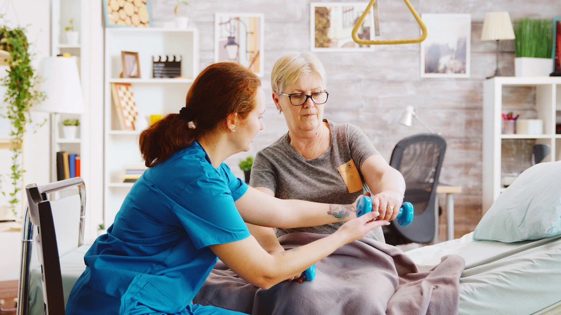

KINESIOLOGÍA
Si hablamos de kinesiología es muy posible que muchas personas no sepan en qué consiste, sin embargo, esta disciplina médica es, en algunos países, sinónimo de la fisioterapia. Con motivo del Día del Kinesiólogo, que se conmemora el día 13 de abril para dar a conocer esta figura, desde Vital Seguro os explicaremos en qué consiste este tipo de terapia física, y por qué es importante contar con profesionales expertos en tratamientos del dolor y cuidado del sistema musculoesquelético. ¿Qué es la kinesiología? ¿Es lo mismo que la fisioterapia? La kinesiología, del griego “kinesis”, movimiento, es una disciplina médica que estudia el movimiento del cuerpo para determinar posibles trastornos mediante la manipulación de los músculos, su movimiento y respuesta, y así determinar la zona afectada, el origen del problema (físico, emocional….) y si los sistemas que lo riegan están dañados, por ejemplo, el sistema circulatorio o el nervioso. Aunque nació en la década de los años 30, no fue hasta los 60 cuando George Goodheart instauró sus bases. Se concibe como un método integral, que tiene en cuenta la totalidad del cuerpo y busca contactar al “médico interno” para que indique los problemas corporales. Aunque generalmente la kinesiología y la fisioterapia se entienden como sinónimos, no son lo mismo, porque mientras que la kinesiología es una técnica manual que utiliza el movimiento como método de estudio y diagnóstico, la fisioterapia, es una técnica que incluye la kinesiología, el tratamiento manual, además de muchos otros, y que trabaja para promover un correcto movimiento. ¿Cuáles son los beneficios de la kinesiología? Algunos de los beneficios principales de la kinesiología son los siguientes: Calma los dolores físicos y ayuda a enfrentar molestias y tensiones leves. Contribuye a la recuperación muscular. Mejora la postura y recupera el esquema corporal. Trabaja la motricidad, la coordinación y la lateralidad, y mejora los patrones de movimiento. Incrementa el rendimiento deportivo, ya que se realiza cardio, fuerza y flexibilidad. Contribuye al entrenamiento funcional. Mejora el estado de ánimo porque reduce el estrés, la ansiedad, la fatiga, el decaimiento y los problemas psicosomáticos. Puede ser de ayuda en conflictos interpersonales en problemas de aprendizaje (como problemas de concentración, memoria…). Es ideal para cualquier edad y forma física, si bien, es preciso consultar con un profesional si se padecen infecciones, cáncer, problemas cardiovasculares, o se está embarazada.
FISIOTERAPIA

Masoterapia Comprende distintas técnicas o modalidades de masaje, como el masaje terapéutico, el masaje deportivo, el masaje del tejido conjuntivo o el criomasaje (aplicación de frío) y técnicas como el drenaje linfático manual terapéutico o técnicas manuales neuromusculares. 2. Kinesioterapia Método curativo que se fundamenta en los movimientos activos o pasivos del cuerpo o de una parte del mismo. Esto se consigue mediante la aplicación de una fuerza externa que va a producir un movimiento sin que el individuo realice una contracción muscular voluntaria. Está indicada en procesos donde esté comprometida la movilidad articular. 3. Fisioterapia manual ortopédica Se centra en el diagnóstico y tratamiento de lesiones músculo-esqueléticas (lesiones de cadera, hombro o rodilla y dolor de cuello y espalda). 4. Métodos manuales de reeducación de la conducta postural Consiste en la realización de ejercicios de estiramiento, denominados posturas, que cuidan las articulaciones y eliminan las molestias derivadas de contracturas y bloqueos musculares, deformidades de columna (escoliosis) o secuelas de traumatismos. 5. Estiramientos analíticos Maniobras terapéuticas cuyo fin es estirar estructuras del tejido blando acortado para aumentar la amplitud del movimiento. Esta práctica está indicada en contracturas musculares, quemaduras y cicatrices retráctiles o en inmovilización prolongada. 6. Fisioterapia neurológica Se basa en el conjunto de terapias para tratar afecciones del sistema nervioso con el fin de educar o reeducar el tono postural, sinergias y patrones neuromotores patológicos. Está indicada en lesiones cerebrales (Parkinson), lesiones periféricas (parálisis de nervios periféricos), lesiones de médula espinal (espina bífida, esclerosis múltiple, ELA) o síndromes neurológicos infantiles. 7. Fisioterapia respiratoria Consiste en la realización de una serie de procedimientos para la desobstrucción de las vías aéreas, la reeducación respiratoria y de readaptación al esfuerzo con el objetivo de mejorar el funcionamiento de los músculos del aparato respiratorio y el intercambio de gases, así como aumentar la resistencia. La fisioterapia respiratoria está recomendada en casos de enfermedades neuromusculares como distrofias, esclerosis múltiple o ELA, y también después de intervenciones quirúrgicas. 8. Fisioterapia obstétrica Se trata de una serie de ejercicios de gimnasia miasténica hipopresiva dirigidos a potenciar el suelo pélvico. Su nombre proviene del hecho de que los ejercicios se realizan en hipopresión, es decir, anulando la presión que ejercen el diafragma y los músculos abdominales sobre los músculos del suelo pélvico. 9. Vendaje funcional y vendaje neuromuscular El vendaje funcional consiste en la aplicación de tiras adhesivas elásticas o inelásticas cuyo objetivo es limitar los movimientos que afectan a las estructuras dañadas sin limitar otros movimientos. El vendaje neuromuscular se realiza a través de cintas de algodón con un adhesivo acrílico que vendan el músculo desde su nacimiento hasta su inserción.